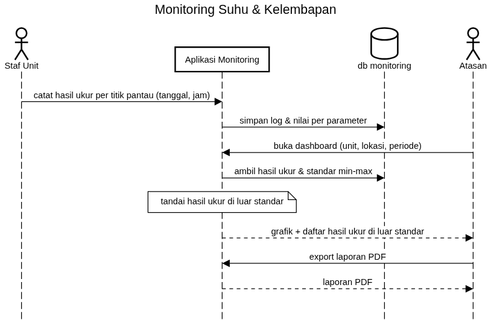
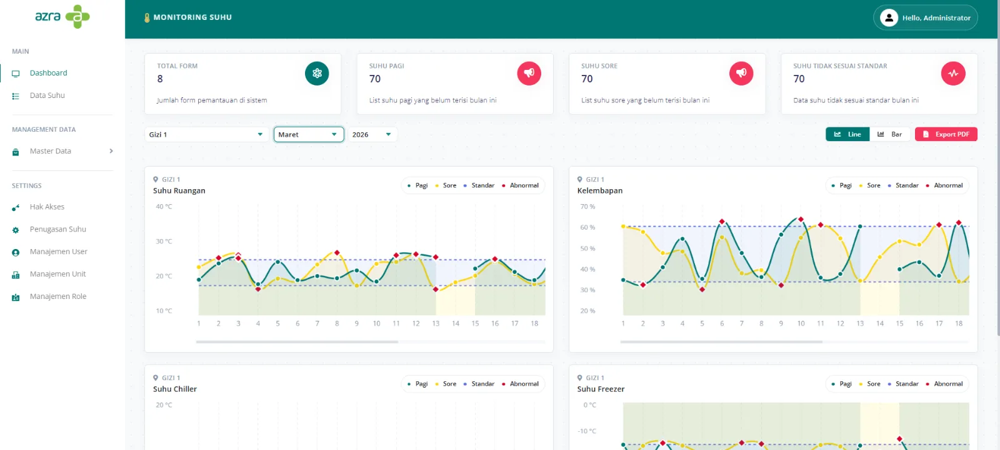
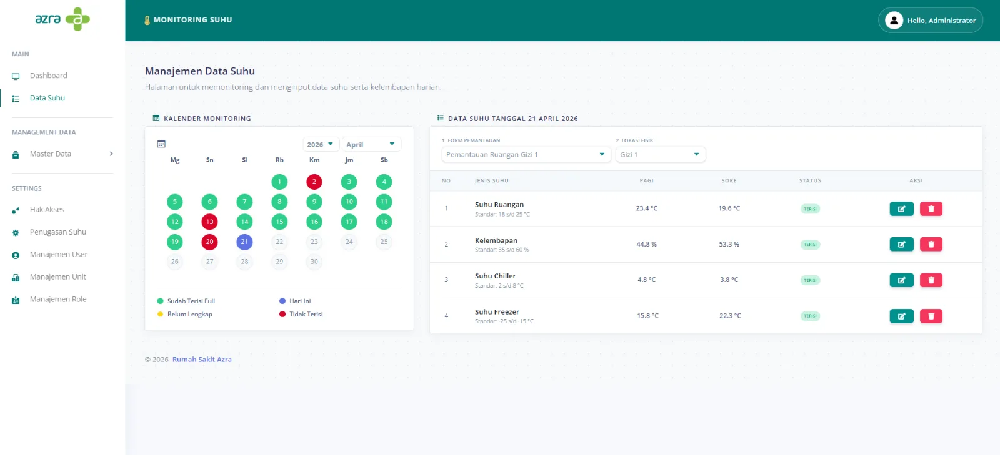
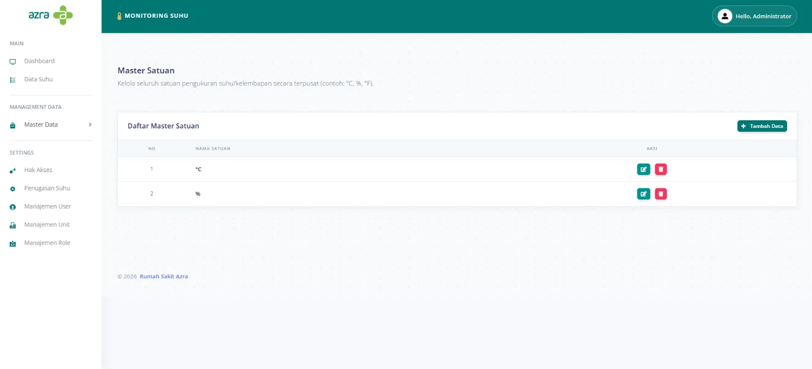
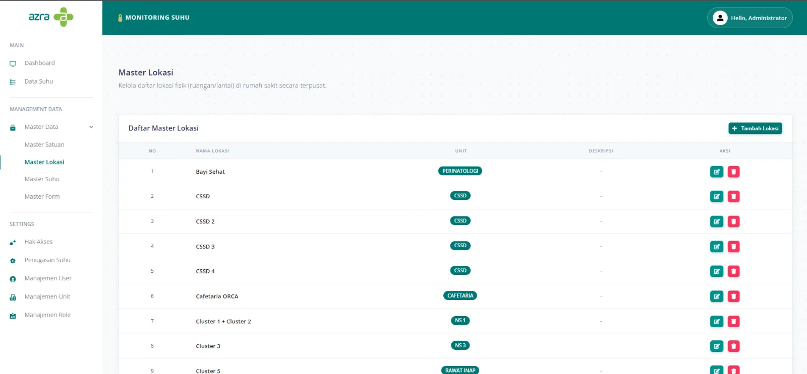
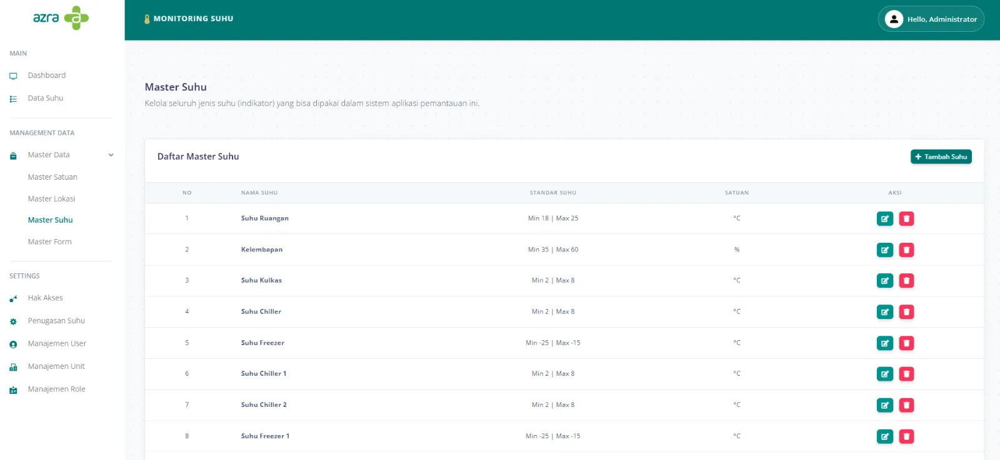
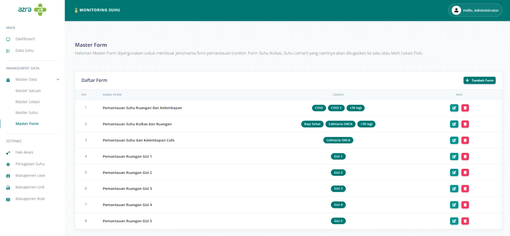
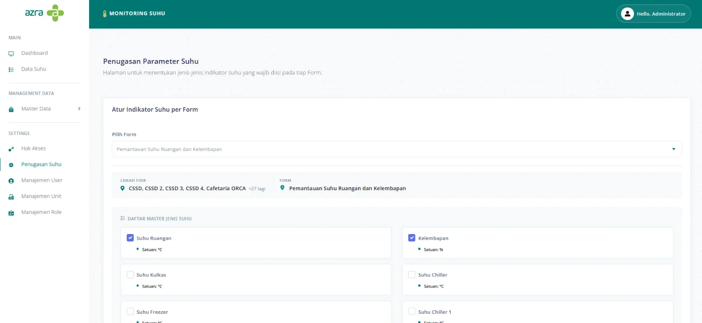

Monitoring Suhu
Mencatat suhu dan kelembapan di titik pantau seluruh unit rumah sakit, dan menandai hasil ukur yang berada di luar rentang standar.
01Konteks & Masalah
Ruangan dan area penyimpanan di rumah sakit harus berada dalam rentang suhu dan kelembapan tertentu. Petugas mencatat hasil ukur di titik pantau yang sudah ditentukan, beberapa kali sehari.
Sistem harus membuat pencatatan cepat bagi petugas, dan memudahkan atasan melihat, per unit dan lokasi, hasil ukur mana yang di luar rentang.
02Kebutuhan Utama
- Parameter yang bisa diatur: parameter (mis. suhu, kelembapan) dengan satuan dan standar min–max, dikelola sebagai master data.
- Titik pantau: titik pantau terikat pada lokasi dan unit; setiap unit diatur parameter apa saja yang wajib dicatat.
- Input cepat: hasil ukur diisi per tanggal dan jam, termasuk langsung dari tabel.
- Deteksi di luar standar: dashboard membandingkan setiap hasil ukur dengan standarnya dan menampilkan yang di luar rentang.
- Pelaporan: grafik per periode dan export PDF.
- Akses menu berbasis role.
03Desain

Poin penting data model
parameter_suhudengan satuan dan standar min–maxtitik_pantaudanmaster_lokasi, terhubung ke unitsetting_unit_suhumenentukan parameter yang wajib dicatat tiap unit / titik pantaulog_monitoring(tanggal, jam, unit, titik pantau) dengandetail_monitoringberisi satu nilai per parameter
04Keputusan Penting
- Satu log dengan banyak nilai detail, sehingga parameter baru bisa ditambah tanpa mengubah struktur tabel.
- Standar disimpan di parameter, sehingga aturan di luar rentang cukup didefinisikan sekali dan berlaku di semua tempat.
05Tampilan







